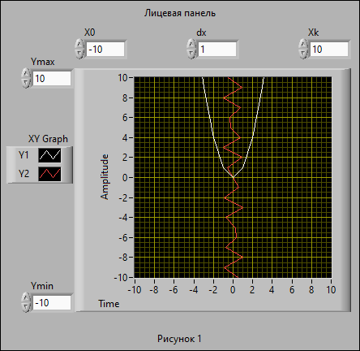
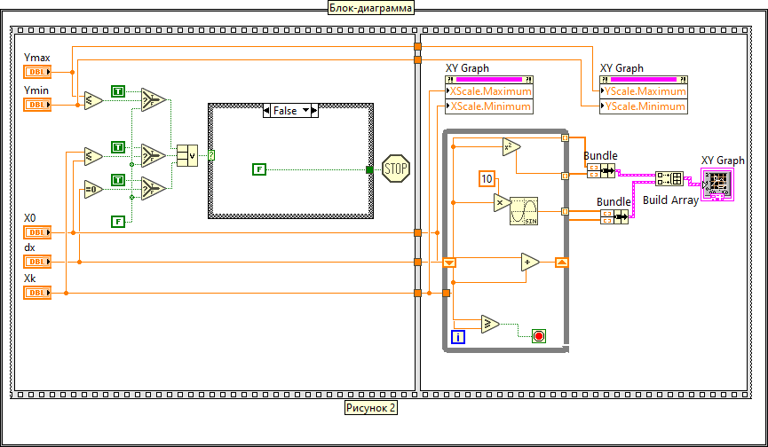

Представлен виртуальный прибор (на рисунках 1 и 2 представлены лицевая панель и блок-диаграмма данного ВП) позволяющий локализовать и получить минимальный по модулю ненулевой корень уравнения x2-sin(10x)=0 с заданной точностью.
Заданное уравнение можно привести к виду x2=sin(10x) и отобразить на графике, наример, на отрезке изменения аргумента от X0=-10 до Xk=10 с шагом dx=1 две кривые функции Y1=ctg(x) и Y2=x2 (рисунок 1). Величина шага dx соответствует точности нахождениякорня. В данном случае она равноа 1.
Если точка пересечения этих двух функций окажеться на заданномотезке изменения аргумента (-10...10), то на следующем этапе нужно задать более мелкий орезок (0...1) изменения аргумента, внутри какого находиться точка пересечения этих двух функций и установить шаг dx=0,1. Этот процесс нужно продолжать до тех пор, пока точка пересечения вышеуказанных функций не окажеться внутри отрезка измения аргумента величина которого будет равна шагу dx (т. е. Xk-X0=0,001)
После запуска ВП перед локализацией корня, которая производиться во втором кадре структура «Flat Sequence» (рисунок 2), в первом кадре осуществляется проверка заданных числовых значений элементов управления X0, Xk, dx, Ymax и Ymin.
